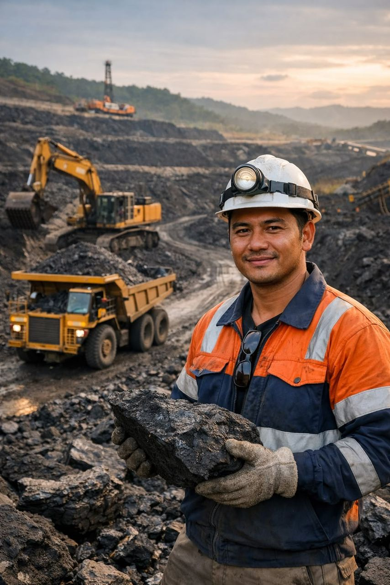

Meet our people
The faces of Swiss Mining Co.
From shaft to surface — the individuals who bring precision, care, and pride to every working day.
Bruno Kälin
22 years underground. Bruno operates the continuous miner on Level 4 of our Graubünden shaft and mentors new operators through the company's two-year underground apprenticeship. "I know every metre of this tunnel. She tells you things if you listen."
Paula Jean DwaPaula
Holds an MSc in Economic Geology from Havard. Paula leads the ore body modelling team at our Valais site, using 3D LiDAR data to predict deposit continuation and reduce unnecessary excavation by up to 30%.

Jakob Zürcher
Third-generation miner. Jakob maintains and operates the multi-boom drill rigs at Uri, holding manufacturer certification from Sandvik and Atlas Copco. He has trained over 40 junior technicians in the past decade.

Amara Diallo
Amara joined Swiss Mining Co. from the Swiss Federal Safety Inspectorate. She leads daily safety briefings, audits personal protective equipment compliance, and manages emergency response drills across all six mine sites.

Peter Hasler
18 years in precious metal refining. Peter oversees the fire assay and ICP spectrometry laboratory at our Zurich refinery, ensuring every batch of gold meets LBMA Good Delivery standards before it leaves the facility.
Elena Pfister
MSc in Environmental Chemistry, University of Bern. Elena monitors water quality, tailings containment, and air particulates at all six sites, producing the monthly environmental disclosure reports shared with local communities.
Reto Meier
Reto operates one of our 60-tonne electric haul trucks in the Graubünden open-cut section. He completed the advanced operator certification in 2021 and was awarded Employee of the Year for his contribution to the zero-incidents record.

Sara Bundi
Sara coordinates the company's community engagement programme, managing relationships with 12 Alpine villages near our sites. She runs the annual open-day programme and quarterly community forums where residents can ask questions directly to site managers.

People development
We invest in the people who invest in us
Every Swiss Mining Co. employee receives a minimum of 120 hours of training per year — covering technical skills, safety protocols, and personal development. Our two-year underground apprenticeship is recognised by Swiss vocational authorities.
- 120+ hours annual training per employee
- Two-year Swiss vocational underground apprenticeship
- Manufacturer-certified equipment operator programmes
- Leadership development pathway for senior roles
- Tuition support for relevant degree qualifications
Roles across our operations
Where our people work
Underground Operators
Drill, blast, haul, and support crews working rotating shifts across six underground mine sites in Graubünden, Valais, and Uri.
Engineering & Geology
Geologists, surveyors, mining engineers, and maintenance specialists ensuring precision at every stage of extraction and processing.
Safety & Environment
Dedicated safety officers, environmental analysts, and emergency response teams protecting workers and the Alpine environment around the clock.
Processing, Logistics & Support
Refinery operators, laboratory analysts, transport specialists, and the administrative and community teams supporting every part of the business.